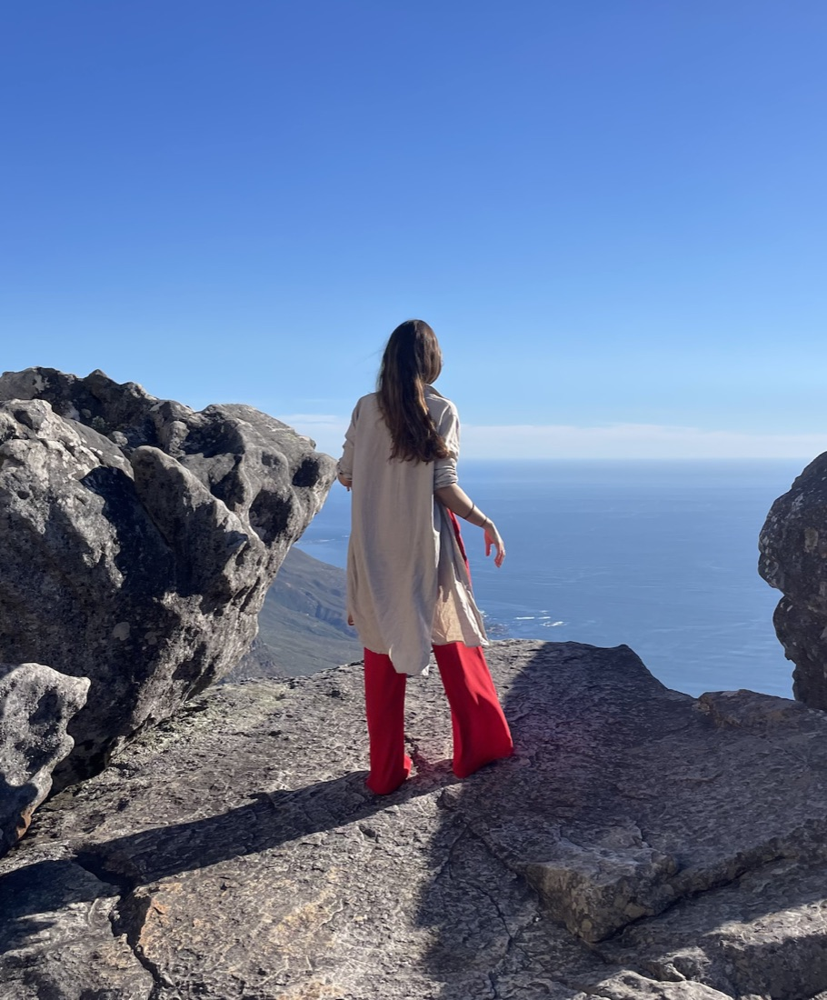

Sobre
Olá, sou a Filipa.
O Innerscapism é o lugar onde as diferentes partes do meu trabalho e da minha vida se encontram: a forma como desenhamos o mundo à nossa volta, e a forma como criamos espaço para nós dentro dele.
Dos edifícios aos produtos
Comecei na arquitetura, onde me interessei pela primeira vez pela relação entre as pessoas e os ambientes por onde se movem.
Esse interesse acompanhou-me até ao UX e ao product ownership. Os espaços tornaram-se digitais: produtos, serviços e os sistemas por trás deles. Nos últimos dez anos, trabalhei com empresas como a Tekever e a BMW, sobretudo em equipas Scrum e ágeis.
Criar, mover, abrandar
Em paralelo, tenho explorado a arte, a prática criativa e uma vida mais contemplativa, e estou a desenvolver a minha prática em yoga e bem-estar criativo. Concluí recentemente uma formação de professora de yoga de 200 horas em Bali, e sou estudante na SPAT, a Sociedade Portuguesa de Arte-Terapia.
Porquê as duas coisas
Fui reparando na mesma pergunta vista de dois lados. A forma como nos sentimos por dentro molda o que construímos, e o que construímos molda a forma como nos sentimos. O Innerscapism é a minha prática em evolução para trabalhar com as duas: experiências criativas que abrem espaço para nos reconectarmos, e design centrado nas pessoas que leva essa mesma atenção para produtos, locais de trabalho e sistemas.
Não me vejo como especialista em todas estas áreas. O que trago é a ligação entre elas, e muita curiosidade.
- Arquitetura
- UX
- Product ownership
- Arte e criação
- Yoga
- Prática contemplativa
- Pensamento sistémico
Criar espaço para o que nos torna humanos.